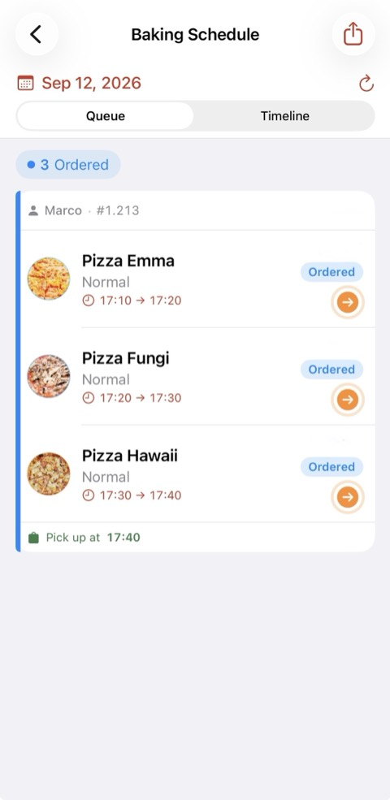

Alle Funktionen der San Marco Pizza App – einmal für Kundinnen und Kunden,
einmal für Pizzeria-Inhaber:innen.
This guide is currently available in German only.
1 · Konto erstellen & einer Pizzeria beitreten
Beim ersten Öffnen landest du auf dem Anmeldebildschirm. Tippe auf
„Konto erstellen", gib Name, E-Mail und ein Passwort ein.
Du kannst dabei ankreuzen, ob du E-Mails über neue Pizza-Tage bekommen
möchtest.
Ein Konto allein reicht nicht zum Bestellen – du musst auch
Mitglied einer Pizzeria sein. Das geht auf zwei Wegen:
QR-Karte scannen: Richte die iPhone-Kamera auf die
QR-Karte deiner Pizzeria – du wirst automatisch aufgenommen.
Aktionscode eingeben: Tippe den Code aus dem Laden
ein – direkt nach der Anmeldung oder später unter
Profil → Code einlösen.
Nur schauen? Tippe auf „Menü ansehen" –
die Speisekarte ist ohne Konto einsehbar.
2 · Der Startbildschirm
Oben siehst du den nächsten Termin als große Karte:
Pizza-Tag in Rot, Backtag in Grün. Sind mehrere geplant, wische oder
nutze die Pfeile ‹ ›, um zwischen ihnen zu
wechseln.
Kündigt deine Pizzeria einen neuen Termin an, erscheint dazu ein
Hinweisbanner. Hast du eine offene Bestellung, zeigt
eine Zeile deine nächste Abholung.
Über Speisekarte, Bestellungen und
Profil (unten bzw. oben rechts) erreichst du alles Weitere.
3 · An einem Pizza-Tag bestellen
Ein Pizza-Tag ist ein geplantes gemeinsames Back-Event mit festen
Abholzeiten in Zeitfenstern.
Auf der Startkarte oder im Menü auf „Pizza bestellen"
tippen.
Pizzen und Größen wählen. Jede Pizza zeigt Zutaten und EU-Allergene;
die Größe steht in cm, wenn die Pizzeria das hinterlegt hat.
Optional ein Getränk dazunehmen.
Eine freie Abholzeit aussuchen. Bei mehreren Pizzen
bekommst du aufeinanderfolgende Zeitfenster – du siehst sofort, wann
alles fertig ist.
Übersicht prüfen, optional eine Nachricht an die Pizzeria schreiben,
verbindlich bestellen.
Jeder Pizza-Tag hat eine Bestellfrist und eine
Stornofrist – beide stehen auf der Karte. Ist die
Bestellfrist vorbei, steht dort „Bestellung geschlossen".
4 · An einem Backtag bestellen
Ein Backtag („Backtag") ist eine Bäckerei-Vorbestellung: Brötchen,
Brezn und andere Backwaren. Keine Zeitfenster – es gibt
ein Abholfenster, in dem du jederzeit kommen kannst.
Auf der grünen Startkarte auf „Bestellen" tippen.
Mengen je Artikel wählen, optional eine Nachricht schreiben.
Verbindlich bestellen. Bezahlung bar bei Abholung.
Du kannst außerdem „Ich komme!" antippen (siehe unten) –
das ist unabhängig davon, ob du bestellst.
5 · „Ich komme!" – Teilnahme zusagen
Auf der Detailseite eines Pizza-Tags oder Backtags kannst du mit
„Ich komme!" zusagen. Das ist getrennt vom
Bestellen – eine Zusage ist keine Bestellung.
Wer zugesagt hat, sieht man unter „Wer kommt". Ob dein
Name und Foto dort für andere Mitglieder sichtbar sind,
steuerst du im Profil unter „Wer mich sehen kann".
Abmelden geht jederzeit über dieselbe Schaltfläche.
6 · Meine Bestellungen
Unter Bestellungen sind alle deine Bestellungen nach
Termin gruppiert – jeder Pizza-Tag und Backtag mit seinen Bestellungen
zusammen.
Fortschritt: eine Leiste von „Bestellt" über „Im
Ofen" und „Fertig" bis „Abgeholt". Du bekommst eine Mitteilung, wenn
deine Bestellung im Ofen ist und wenn sie abholbereit ist.
Stornieren: möglich, solange die Stornofrist des
Termins noch nicht erreicht ist – über die Schaltfläche in der
Bestellung oder durch Wischen.
Stornierte Bestellungen sind ausgeblendet; über
„Stornierte anzeigen" im Bereich „Vergangen" holst du sie zurück.
Als PDF speichern (im Browser: „Als PDF speichern /
drucken") gibt dir eine Übersicht all deiner Bestellungen.
7 · Bezahlung
Bar bei Abholung ist immer möglich. Bietet deine
Pizzeria es an, kannst du beim Bestellen auch mit Apple Pay oder
Karte zahlen – der Betrag wird dann erst nach Bestätigung durch
die Pizzeria eingezogen. In der Browser-Version ist nur Barzahlung
möglich.
Es werden nur Waren zur Abholung im Laden verkauft – keine Lieferung.
8 · Profil & Einstellungen
Name & Foto: antippen, um ein Profilfoto zu
wählen; Namen bearbeiten und speichern.
Mitteilungen: E-Mails der App (Ankündigungen neuer
Termine, Bestellbestätigungen) ein-/ausschalten. Push-Mitteilungen
steuerst du in den iPhone-Einstellungen.
Wer mich sehen kann: ob Name und Foto anderen
Mitgliedern angezeigt werden, wenn du „Ich komme!" antippst – mit
Vorschau.
Meine Pizzerien: zwischen mehreren beigetretenen
Pizzerien wechseln, eine verlassen, einer weiteren beitreten.
Konto: Passwort ändern, abmelden, Konto endgültig
löschen (vergangene Bestellungen bleiben anonymisiert bei der Pizzeria).
9 · Ohne iPhone: im Browser bestellen
Hast du kein iPhone, nutze die Browser-Version:
bestellen.pizzasanmarco.org.
Sie funktioniert auf jedem Smartphone und Computer.
Funktionsumfang wie in der App –
Konto, Beitritt per Code, Pizza-Tage und Backtage, Bestellen,
„Ich komme!", Bestellungen, Profil. Unterschiede:
Benachrichtigungen nur per E-Mail (kein Push).
Bezahlung nur bar bei Abholung.
Beitritt per Code oder QR-Karte, die du mit der
Handy-Kamera scannst (kein Scanner in der Web-Version selbst).
1 · Eine eigene Pizzeria starten
Die App ist nicht auf San Marco Pizza beschränkt – jede:r kann eine
eigene Pizzeria betreiben: eigenes Menü, eigene Pizza-Tage und Backtage,
eigene Kundschaft.
Melde dich bei uns – du bekommst einen
Startcode. In der App unter
Profil → Pizzeria beitreten oder gründen → eigene
gründen den Code einlösen. Danach erscheint auf deinem
Startbildschirm der Inhaber-Bereich.
2 · Der Inhaber-Bereich
Unter deinem nächsten Termin erscheinen auf dem Startbildschirm
zusätzliche Karten:
Pizzen verwalten: Name, Foto, Zutaten, EU-Allergene und
Preise je Größe (Klein / Normal). Nicht verfügbare Pizzen ausblenden.
Getränke & Backwaren verwalten: ein Umschalter
trennt Getränke (Beilage zur Pizza-Bestellung) von
Backwaren (für Backtage). Je Artikel Name, Foto und Preis.
Die Speisekarte ist für Kundschaft auch ohne Anmeldung
einsehbar – Fotos und Zutaten lohnen sich.
4 · Einen Pizza-Tag planen
Termine → Pizza-Tage verwalten → +
Datum und Abholfenster (von–bis).
Zeitfensterlänge – z. B. 7 Minuten pro Slot. Die App
erzeugt daraus die buchbaren Abholzeiten.
Bestellfrist und Stornofrist
(Stunden vor der Abholzeit).
„Bei Bestellungen benachrichtigen": du bekommst eine
Push-Mitteilung bei jeder neuen Bestellung.
Die maximale Pizzen-Zahl pro Bestellung stellst du zentral in den
Pizzeria-Einstellungen ein.
5 · Einen Backtag planen
Termine → Backtage verwalten → +
Wie ein Pizza-Tag, aber ohne Zeitfenster: du legst nur
ein Abholfenster fest (Abholung ab / Abholung bis).
Dazu Bestell- und Stornofrist, optional Titel/Bäcker:in/Ort/Notiz und
„Bei Bestellungen benachrichtigen".
Die Backwaren-Auswahl pflegst du unter
Menü → Getränke & Backwaren → Backwaren.
Ein Pizza-Tag und ein Backtag dürfen am selben Datum stattfinden.
6 · Kundschaft einladen
Kundschaft → Kundschaft einladen
QR-Karte (iPhone): druckbare Karte – Kundschaft
scannt sie mit der iPhone-Kamera, lädt die App und tritt automatisch
bei.
QR-Karte (Web): zweite Karte für Kundschaft ohne
iPhone – führt zu bestellen.pizzasanmarco.org.
Aktionscodes: kurze Codes zum Weitergeben, mit
optionalem Ablaufdatum.
„Neuen QR-Code erstellen" macht die alten Karten ungültig – nur nutzen,
wenn nötig.
7 · Bestellungen bearbeiten
Termine → Bestellungen nach Tag öffnet sich auf
dem nächsten Termin. Oben wählst du das Datum, darunter einen Filter
(Aktiv / Abgeholt / Storniert / Alle).
Je Bestellung siehst du Pizzen, Getränke bzw. Backwaren, die Nachricht
der Kundschaft und den Status. Mit einem Wisch nach links schiebst du
eine Bestellung in den nächsten Status. Bestellungen von Pizza-Tagen und
Backtagen erscheinen beide hier.
8 · Backplan verfolgen

Ansicht „Warteschlange": jede Bestellung mit ihren Pizzen, Backzeiten
und einem Pfeil zum Weiterschieben. „Zeitleiste" zeigt dieselben
Bestellungen im Querformat.
Pizza-Tage:Termine → Backplan
verfolgen. Zwei Ansichten – Warteschlange (Liste,
nach Bestellung) und Zeitleiste (Gantt im Querformat).
Tippe und halte einen Eintrag bzw. Balken, um eine Bestellung in den
nächsten Status zu setzen; jede Änderung zeigt 5 Sekunden lang
„Rückgängig". Ein druckbares PDF (ein Zettel je Bestellung mit Back- und
Ausgabe-Checkliste sowie Kassenabgleich) findest du oben rechts.
Backtage:Termine → Backtag-Plan
verfolgen. Springt auf den aktuellen bzw. nächsten Backtag, mit
Vor/Zurück zwischen Terminen. „Zu backen"-Übersicht plus alle
Bestellungen mit Halten-zum-Weiterschieben und eigenem PDF.
9 · Kundschaft benachrichtigen
In der Liste unter Pizza-Tage verwalten bzw.
Backtage verwalten gibt es je Termin ein
Glocken- bzw. Megafon-Symbol:
Push an alle Mitglieder deiner Pizzeria.
E-Mail an Mitglieder, die E-Mails aktiviert haben –
mit allen Termindetails.
Kundschaft sieht einen neuen Termin außerdem automatisch als
Hinweisbanner auf ihrem Startbildschirm – die Benachrichtigung ist der
zusätzliche Anstoß.
10 · Umsatzbericht
Business → Umsatzbericht. Umsatz je Tag
(nur abgeholte Bestellungen), aufgeschlüsselt nach Pizzen, Getränken und
Backwaren, mit Top-Sellern und Gesamtsumme. Ein Monatsfilter und ein
druckbares, gebrandetes PDF sind eingebaut. Ein Pizza-Tag und ein
Backtag am selben Datum werden zu einer Zeile zusammengefasst.
11 · Zahlungen per Karte (optional)
Business → Zahlungseinstellungen. Standard ist
Barzahlung bei Abholung. Wenn du Karten- bzw.
Apple-Pay-Zahlung anbieten möchtest, verbindest du ein
Stripe-Konto (die Einnahmen gehen direkt auf dein
Konto, ohne Plattformgebühr). Kundschaft sieht die Kartenoption erst,
wenn dein Konto vollständig eingerichtet ist. Melde dich bei uns, wenn
du das aktivieren willst.
12 · Pizzeria-Einstellungen
Business → Pizzeria-Einstellungen:
Name deiner Pizzeria.
Pizza-Größen in cm – wird der Kundschaft im Menü
und beim Bestellen angezeigt (z. B. „Normal (Ø 32 cm)").